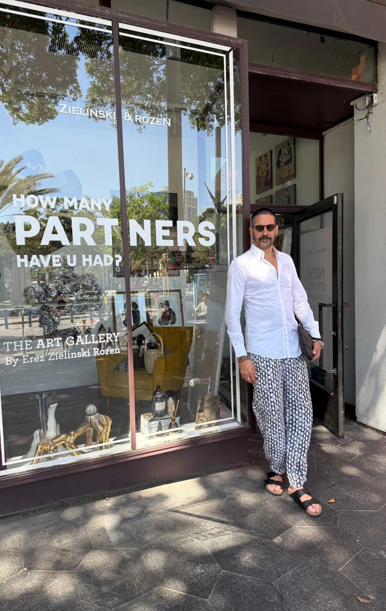
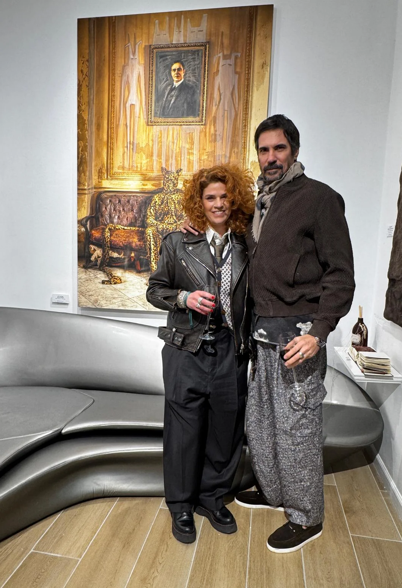

Make you feel like Art
אומנות שוברת מוסכמות ויצירה חדשה היא חלק בלתי נפרד מהמותג זילינסקי רוזן.
הצורך בהתפתחות תמידית, מחשבה שונה ויציאה מהקופסא הוא חלק הכרחי בהתפתחות האנושית
ולכן חשוב לנו לעודד ולתמוך באמנים ואומניות צעירים המביאים בשורה חדשה, כמו הבשמים שלנו.



ארז זילינסקי רוזן הוא רוקח בשמים ואוצר תרבות, מייסד מותג הבישום הבינלאומי ZIELINSKI & ROZEN ומייסד רשת גלריות בינלאומית לאמנות עכשווית, הפועלת בתל אביב וברחבי אירופה, בשיתוף פעולה עם אמנים ויוצרים מהארץ ומהעולם.
עבור ארז, בישום ואמנות הם שני ביטויים של אותה שפה יצירתית. שניהם נולדים מתוך זיכרון, רגש וחוויה אנושית, ומבקשים לעורר תחושה, לעורר מחשבה ולהישאר עם האדם גם הרבה אחרי רגע המפגש.
מתוך תפיסת העולם הזו נולדו גם הגלריות. הן אינן רק חללי תצוגה, אלא מרחבים חיים המאפשרים מפגש בין אמנים, יוצרים וקהל, ומעודדים דיאלוג בין אמנות, תרבות, ריח וזיכרון. כל תערוכה נבנית מתוך רעיון אוצרותי שלם, המשלב בין יצירה חזותית, חוויה חושית וסיפור אנושי.
הגלריות פועלות ללא מטרות רווח, וכל ההכנסות ממכירת היצירות מועברות ישירות לאמנים. הן הוקמו מתוך אמונה עמוקה כי לאמנות יש הכוח לחבר בין אנשים, לעורר שיח, להרחיב נקודות מבט וליצור חוויה שממשיכה להדהד גם לאחר היציאה מהגלריה.
מאז הקמתן הגלריות הפכו לבית לעשרות אמנים ישראלים ולבמה לתערוכות מקוריות המשלבות אמנות עכשווית, בישום וחוויה רב־חושית. כעת, עם פתיחת גלריות חדשות ברחבי אירופה, מתרחב החזון אל מעבר לגבולות ישראל וממשיך ליצור חיבורים בין יוצרים, תרבויות וקהלים ברחבי העולם.
כדבריו של ארז:
“אמנות היא חלק בלתי נפרד מהמותג. היא שוברת מוסכמות, מרחיבה גבולות ומאפשרת חופש. אותו חופש שמוביל אותי בעולם הבישום, מוביל אותי גם ביצירת מרחבים שבהם אנשים יכולים להרגיש, לחשוב ולהתחבר.”

to affect you to the depths
of your soul,
to speak about the personality,
to reflect its uniqueness.
The scent can tell a lot.
who we are, how we feel,
how we think, how we behave.
It also reveals those facets
that we, perhaps,
did not notice in ourselves before.
Every ingredient and
every moment counts…

קורין אברהם, 45, תל-אביב יפו, היא יוצרת, אוצרת ויזמית תוכן הפועלת בצומת שבין אופנה, תרבות, אמנות ורגש.
בהכשרתה היא עורכת דין ובהדרגה פנתה לעשייה יצירתית הנשענת על צילום.
עבודתה מאופיינת בדיוק אסתטי וביכולת לבנות סיפור דרך דימוי שמקבל חיים בהפקות ופרויקטים שמתקיימים בין ערים ותרבויות שונות, תוך חיבור בין מקומי לגלובלי.
אברהם עוסקת ביצירה כדרך לפגוש את עצמה.
העבודה שלה מתקיימת בתוך העולם גם כשהוא רועש, צפוף ורווי תפקידים.
עשייתה מצביעה על ידע קיים - ידע שאינו נלמד, אלא נזכר.
היא אינה מחפשת תנאים של ניתוק או התבודדות, אלא תשומת לב שמתקיימת בתוך החיים עצמם.
מכלול העבודות בתערוכה מהוות עבור אברהם סקלה של בדידות, לפעמים כמקום של נחמה והסחת דעת, לפעמים כעמידה חשופה, לפעמים כהתמודדות.
החיבור שלה אליהן נובע מהבחירה להישאר בתוך התנועה הזו, גם כשלא ברור מה מחכה בצומת הבא. זה אינו סיפור סגור, אלא תהליך חי שמבקש אומץ, הקשבה והסכמה, כאשר הבהירות נוצרת מתוך נוכחות מתמשכת, ולאו דווקא מתוך היעלמות מהעולם.